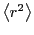
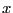
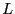
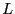
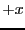
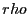
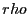

Next: Ensembles
Up: Molecular Dynamics Simulation
Previous: Case Study 2: Static
This Case Study combines elements of Case Studies 5 and 6 in F&S,
which are unfortunately incomplete in their description. The purpose
of this Case Study is to demonstrate how one computes a self-diffusion
coefficient,  , from an MD simulation of a simple
Lennard-Jones liquid. There are two means to computing :
(1) the mean-squared displacement
, and (2) the velocity
autocorrelation function, .
, from an MD simulation of a simple
Lennard-Jones liquid. There are two means to computing :
(1) the mean-squared displacement
, and (2) the velocity
autocorrelation function, .
The self-diffusion coefficient governs the evolution of concentration,
 , (or number density) according to a generalized transport equation:
, (or number density) according to a generalized transport equation:
Einstein showed (details in text) that is
related to the mean-squared displacement,
:
At long times, should be independent of time; hence
We can compute
, and therefore estimate
, easily using MD simulation. There is, however, a very
important consideration concerning periodic boundary conditions.
Recall that, during integration, immediately after the position
update, we test to see if the update has taken the particle outside of
the primary box. If it has, we simply shift the particle's position
by a box length in the appropriate dimension and direction. The
displacement of the particle during this step is not a box
length, but if you consider just the coordinates as they appear in the
output, you would think that it is. It is therefore important that we
work with unfolded coordinates when computing mean-squared
displacement. This is not adequately explained in the text, so we
cover it in some detail here.
``Unfolding'' coordinates in a simulation with periodic boundaries
requires that we keep track of how many times each particle has
crossed a boundary. The code mdlj.c was just modified to allow
output of unfolded coordinates in the sample configurations. Here is
how it works. In the integration loop, you may recall that the first
step is the update of positions (below we consider the -coordinate
only):
rx[i]+=vx[i]*dt+0.5*dt2*fx[i];
The quantity
is
the -displacement of particle  in one time step of length
. Now, this displacement may have resulted in a new
-coordinate of particle which is less than zero or greater than
the box length , in which case, we shift the coordinate to keep it
between 0 and . In addition to performing this shift, we now increment a
counter for particle :
in one time step of length
. Now, this displacement may have resulted in a new
-coordinate of particle which is less than zero or greater than
the box length , in which case, we shift the coordinate to keep it
between 0 and . In addition to performing this shift, we now increment a
counter for particle :
if (rx[i]<0.0) { rx[i]+=L; ix[i]--; }
if (rx[i]>L) { rx[i]-=L; ix[i]++; }
The counter ix[i] is incremented by 1 if the -coordinate
update takes the particle through the  boundary, and is
decremented by 1 if the update takes the particle through the
boundary. This counter tells us how box lengths the total
-displacement of particle has accumulated, and its sign gives
us the sense of this accumulation. Now, the array rx[] always
contains the periodically shifted coordinates, but we can easily generate
the unfolded coordinates at any time (say, upon output) by
performing the following operation:
rxu = rx[i]+ix[i]*L;
Here, is the box length (assumed cubic). In the newly updated
code mdlj.c, the integrator and output
functions have been modified to allow output of the unfolded
coordinates if the user includes the -uf flag on the command line.
Let us now run mdlj using the final configuration from one of
the previous runs in the previous case study as an initial state, with
the goal of computing
. (Note that we must still
specify  and  on the command line.) We will go for as much
detail as possible, and output the configuration every time step. To
limit the amount of data, we will terminate this simulation at 1000
steps. This results in 1,000 xyz data files containing unfolded
coordinates. Now, the program msd.c
will read all of these configurations in at once (that is, it
reads in the entire trajectory), and compute the mean-squared
displacement,
, from this data using a conventional,
straightforward algorithm.
and  on the command line.) We will go for as much
detail as possible, and output the configuration every time step. To
limit the amount of data, we will terminate this simulation at 1000
steps. This results in 1,000 xyz data files containing unfolded
coordinates. Now, the program msd.c
will read all of these configurations in at once (that is, it
reads in the entire trajectory), and compute the mean-squared
displacement,
, from this data using a conventional,
straightforward algorithm.
The C-code for this algorithm appears below.  is the number of
``frames'' in the trajectory, and is the number of particles.
is computed by considering the change in
particle position over an interval of size
is the number of
``frames'' in the trajectory, and is the number of particles.
is computed by considering the change in
particle position over an interval of size  . Any frame in the
trajectory can be considered an origin for any interval size, provided
enough frames come after it in the trajectory. This means that we
additionally average over all possible time origins. dt is a
variable that loops over allowed time intervals. cnt[]
counts the number of time origins for a given interval. sdx[]
is the array in which we accumulate squared displacement in the
-displacements, and has elements, one for each allowed interval
value, including interval length 0.
. Any frame in the
trajectory can be considered an origin for any interval size, provided
enough frames come after it in the trajectory. This means that we
additionally average over all possible time origins. dt is a
variable that loops over allowed time intervals. cnt[]
counts the number of time origins for a given interval. sdx[]
is the array in which we accumulate squared displacement in the
-displacements, and has elements, one for each allowed interval
value, including interval length 0.
for (t=0;t<M;t++) { // Loop over all frames
for (dt=1;(t+dt)<M;dt++) { // Loop over all allowed origins
cnt[dt]++; // Increment the number of origins
for (i=0;i<N;i++) {
sdx[dt] += (rx[t+dt][i] - rx[t][i])*(rx[t+dt][i] - rx[t][i]);
sdy[dt] += (ry[t+dt][i] - ry[t][i])*(ry[t+dt][i] - ry[t][i]);
sdz[dt] += (rz[t+dt][i] - rz[t][i])*(rz[t+dt][i] - rz[t][i]);
}
}
}
The code fragment below completes the averaging, and outputs the
three components of the mean-squared displacement, as well
as the total mean-squared displacement.
for (t=0;t<M;t++) {
sdx[t] /= cnt[t]?(N*cnt[t]):1;
sdy[t] /= cnt[t]?(N*cnt[t]):1;
sdz[t] /= cnt[t]?(N*cnt[t]):1;
fprintf(stdout,"%.5lf %.8lf %.8lf %.8lf %.8lf"
t*step*md_time_step,sdx[t],sdy[t],sdz[t],
sdx[t]+sdy[t]+sdz[t]);
}
Below is a plot of mean-squared displacement from a simulation of
1,000 steps. Recall that the Einstein relation holds as
. We see in this plot that, for low times,
, which indicates that motion in this
regime is not diffusive; it is in fact ballistic. This ballistic
behavior becomes apparently diffusive at a time around 0.1  .
Considering the data beyond , we can roughly estimate
at about 0.06.
.
Considering the data beyond , we can roughly estimate
at about 0.06.
|
Mean-squared displacement in a Lennard-Jones
fluid from an MD simulation in which = 108, = 0.8442,
sampled every time step for 1,000 steps. Measured temperature
and pressure,
.. 1 |
- 1 This
graph was produced using gnuplot and a script found
here.
|
|
It is advisable, however, to compute using much
longer-scale data. The ballistic crossover indicates that we need not
consider time intervals below 0.1 (100 steps of = 0.001).
In fact, in a long simulation of 600,000 steps, we can get a good
estimate of by considering samples every 1,000 steps.
To obtain a more unambiguous estimate of , we can plot
vs and extrapolate to
, where
.
|
Mean-squared displacement in a Lennard-Jones fluid from an MD
simulation in which = 108, = 0.8442, sampled every 1,000
time steps for 600,000 steps. The horizontal line indicates that
= 0.06. Measured temperature
and
pressure,
. 1 |
- 1 This graph was produced
using gnuplot and a script found
here.
|
|
The velocity autocorrelation function route to the diffusion constant
begins with the realization that one can reconstruct the displacement
of a particle over a time interval by simply integrating its
velocity:
So, the mean squared displacement can be expressed
The third equality arises because we can swap  and
. The quantity
is the velocity autocorrelation function.
This is an example of a Green-Kubo relation; that is, a relation
between a transport coefficient, and an autocorrelation function of a
dynamical variable. Eq. 156 then leads to
and
. The quantity
is the velocity autocorrelation function.
This is an example of a Green-Kubo relation; that is, a relation
between a transport coefficient, and an autocorrelation function of a
dynamical variable. Eq. 156 then leads to
So, the second route to computing requires that we
numerically integrate
out to very large times. How
large? First, let's try to understand the behavior of
.
In three dimensions, we compute this by computing the components and
adding them together, as we did for mean-squared displacement:
Because the system is (nearly) isotropic, we should expect all these
components to be equal. The plot of
vs. shown below indicates the level to which we can
expect the three components to be equal for such a small system. This
data was computed using the code vacf.c.
|
Velocity autocorrelation in a Lennard-Jones fluid from an MD
simulation in which = 108, = 0.8442, sampled every time
step for 1,000 steps. Measured temperature
and
pressure,
. 1 |
- 1 This graph was produced using
gnuplot and a script found
here.
|
|
Integrating the composite out to gives
, which is not terribly good compared to computed
by mean-squared displacement. This is because, although the VACF
below about contributes a heavy fraction to the integral,
the VACF is a very slowly decaying function, so the tail contributes a
significant amount to the integral as well. So, just for fun, I
extended the 1,000-step run out to 3,000 steps, then recomputed the
VACF. The result:
This result is no better,
and this shows that it is often difficult to get reliable estimates of
transport coefficients from Green-Kubo-type relations without
including much longer-time contributions. This conventional algorithm
for computing the VACF becomes quite costly as we increase the the run
time; it scales like . For this reason, it is often desirable
to use more sophisticated sampling techniques when estimating transport
coefficients using Green-Kubo-type analyses. In the interest of time,
we won't consider these techniques in this course.
Next: Ensembles
Up: Molecular Dynamics Simulation
Previous: Case Study 2: Static
cfa22@drexel.edu